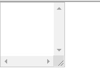
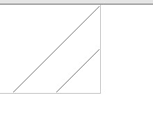

本文通过两种方法实现侧栏可以调节宽度，一种是大家都是熟悉的js实现，另一种是使用css实现。具体操作如下：
js实现侧栏拖动
js实现侧栏拖动主要是监听鼠标点击，移动，抬起操作，然后操作dom，将鼠标拖动的距离赋值给dom对象的width。
新建一个实现拖动的页面
1
2
3
4
5
6
7
8
9
10
11
12
13
14
15
16
17
18
19
20
21
22
23
24
25
26
27
28
29
30
31
32
33
34
35
36
37
38
39
40
41
42
43
44
45
46
47
48
49
50
51
52
53
54
55
56
57
58
59
60
61
62
63
64
65
66
67
68
69
70
71
72
73
74
<html lang="en">
<head>
<meta charset="UTF-8">
<meta name="viewport" content="width=device-width, initial-scale=1.0">
<title>使用js实现左侧框拉拽</title>
<style>
body {
margin: 0;
height: 100vh;
}
.container {
display: flex;
}
nav {
display: block;
width: 200px;
height: 100vh;
background-color: yellowgreen;
position: relative;
}
nav img {
width: 100%;
}
.bar {
position: absolute;
right: 0;
top: 0;
width: 15px;
height: 100%;
background: white;
display: flex;
justify-content: center;
align-items: center;
}
.bar i {
width: 1px;
height: 15px;
background: black;
margin: 2px;
}
.bar:hover {
cursor: ew-resize;
}
content {
display: block;
flex: 1;
height: 100vh;
background: yellow;
}
</style>
</head>
<body>
<div class="container">
<nav>
<div class="bar">
<i></i>
<i></i>
</div>
</nav>
<content></content>
</div>
</body>
</html>上述具体实现内容：使用flex弹性布局将container中的子元素实现左右排列，nav元素有特定宽度，content元素flex为1，默认撑满剩余的宽度。bar为拖动边框，故意设置宽度大点，方便看的清楚。
使用js实现页面分栏可拖动
获取需要操作的元素
1
2const bar = document.querySelector('.bar')
const nav = document.querySelector('nav')为事件添加事件
1
2
3
4
5bar.addEventListener('mousedown', startDrag)
function startDrag () {
document.documentElement.addEventListener('mousemove', onDrag)
document.documentElement.addEventListener('mouseup', stopDrag)
}实现事件函数以及实现拖动
1
2
3
4
5
6
7
8
9
10
11
12
13
14
15
16
17
18
19
20
21let startX = 0 //鼠标点击的时候的位置
let startWidth = 0 // 刚开始bar的宽度
const bar = document.querySelector('.bar')
const nav = document.querySelector('nav')
bar.addEventListener('mousedown', startDrag)
function startDrag(e) {
startX = e.clientX
startWidth = parseInt(getComputedStyle(nav).width)
document.documentElement.addEventListener('mousemove', onDrag)
document.documentElement.addEventListener('mouseup', stopDrag)
}
function onDrag(e) {
nav.style.width = e.clientX - startX + startWidth + 'px'
}
function stopDrag() {
document.documentElement.removeEventListener('mousemove', onDrag)
document.documentElement.removeEventListener('mouseup', stopDrag)
}
css实现拖动
css实现拖动最主要的是一个叫做resize的属性和一个叫做overflow的属性，接下来让我们实现一下。
首先我们实现一个简单的例子
1
2
3<div class="resize-bar">
</div>1
2
3
4
5
6
7.resizr-bar {
width: 100px;
height: 100px;
border: 1px solid #bbb;
resize: horizontal;
overflow: scroll;
}会出现如下结果：

此时拖动右下角就可以实现拖动了。同时我们可以使用-webkit-scrollbar属性实现对这个东西的样式的改变。
比如：
1
2
3
4.resize-bar::-webkit-scrollbar {
width: 200px;
height: 200px;
}效果如下：

好像变得更丑了。哈哈哈哈哈哈哈哈。接下来我们实现一个侧栏可拖动的效果。
实现侧栏可拖动
首先我们搭建出基本的页面布局，由于上面使用的是弹性布局，所以这次使用float实现，div左右排列
1
2
3
4<div class="container">
<div class="container-left">左侧内容 左侧内容 左侧内容 左侧内容 左侧内容</div>
<div class="container-right">右侧内容 右侧内容 右侧内容 右侧内容 右侧内容 右侧内容 右侧内容</div>
</div>1
2
3
4
5
6
7
8
9
10
11
12
13
14
15
16
17
18
19
20body {
margin: 0;
}
.container {
overflow: hidden;
border: 1px dashed yellowgreen;
}
.container-left {
float: left;
height: 400px;
border-right: 1px solid red;
}
.container-right {
padding: 16px;
box-sizing: border-box;
overflow: hidden;
}将左侧的右边框换成我们需要在拖动的时候显现的线
1
2
3
4
5
6
7
8
9<div class="container">
<div class="container-left">
左侧内容 左侧内容 左侧内容 左侧内容 左侧内容
<div class="resize-line">
</div>
</div>
<div class="container-right">右侧内容 右侧内容 右侧内容 右侧内容 右侧内容 右侧内容 右侧内容</div>
</div>1
2
3
4
5
6
7
8
9.resize-line {
position: absolute;
right: 0;
top: 0;
bottom: 0;
border-right: 2px solid #eee;
border-left: 1px solid #bbb;
pointer-events: none;
}然后将rezize-bar加上，将内容用content包裹住
1
2
3
4
5
6
7
8
9
10
11<div class="container">
<div class="container-left">
<div class="resize-bar">
</div>
<div class="resize-line"></div>
<div class="content">
左侧内容 左侧内容 左侧内容 左侧内容 左侧内容
</div>
</div>
<div class="container-right">右侧内容 右侧内容 右侧内容 右侧内容 右侧内容 右侧内容 右侧内容</div>
</div>1
2
3
4
5
6
7
8
9
10
11
12
13
14
15
16
17
18
19
20
21
22
23.resize-bar {
width: 200px;
height: inherit;
resize: horizontal;
overflow: scroll;
cursor: ew-resize;
opacity: 0;
}
.resize-bar::-webkit-scrollbar {
width: 200px;
height: inherit;
}
.content {
position: absolute;
top: 0;
right: 5px;
bottom: 0;
left: 0;
padding: 16px;
overflow-x: hidden;
}